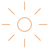

jovens atendidos

Um sorriso saudável abre portas para o futuro.
A Turma do Bem é uma ONG que reúne dentistas voluntários para oferecer tratamento odontológico gratuito a jovens em situação de vulnerabilidade social.
Quem é a Turma do Bem
Fundada em 2002 pelo dentista Fábio Bibancos, a Turma do Bem é uma Oscip (Organização da Sociedade Civil de Interesse Público) e se considera a maior rede de voluntariado especializado em odontologia do mundo.
Hoje, mais de 19 mil dentistas voluntários atuam em 12 países. O objetivo é garantir que a condição socioeconômica não seja um impedimento para que os jovens sorriam, estudem e busquem oportunidades sem dor ou vergonha.
Impacto
O impacto em números
Resultados de mais de duas décadas de trabalho voluntário.
dentistas voluntários
países com a rede ativa
mulheres vítimas de violência atendidas
Fonte: dados divulgados pela Turma do Bem na imprensa (2026). Confirme os números atualizados no site oficial da ONG.
Programa Dentista do Bem
Como o atendimento funciona
Jovens de 11 a 17 anos recebem tratamento completo e gratuito até completarem 18 anos.
-
Triagem
Um dentista voluntário faz um exame visual rápido e não invasivo, e a família responde a um questionário socioeconômico.
-
Seleção
A ONG avalia as fichas e avisa os jovens que serão beneficiados, dando prioridade aos casos mais graves.
-
Tratamento
Um dentista parceiro atende em seu consultório, com radiografias, ortodontia, próteses e implantes quando necessário.
-
Acompanhamento
O escritório da ONG faz a ponte entre o jovem, a família, a escola e o dentista, e monitora os atendimentos.
Nossa parceria
Onde a plataforma entra
Para atender mais jovens, a Turma do Bem precisa manter doadores e parceiros engajados.
O desafio
Organizar contatos, acompanhar cada doador e decidir onde investir esforço de captação exige dados confiáveis.
A proposta
Uma plataforma que centraliza doadores e parceiros, organiza o funil de captação e usa dados e inteligência artificial para apoiar decisões.
O resultado esperado
Mais doadores conectados significam mais recursos para a ONG e mais jovens saindo do ciclo da pobreza.
Quer saber mais?
Veja as dúvidas frequentes ou fale com a nossa equipe.